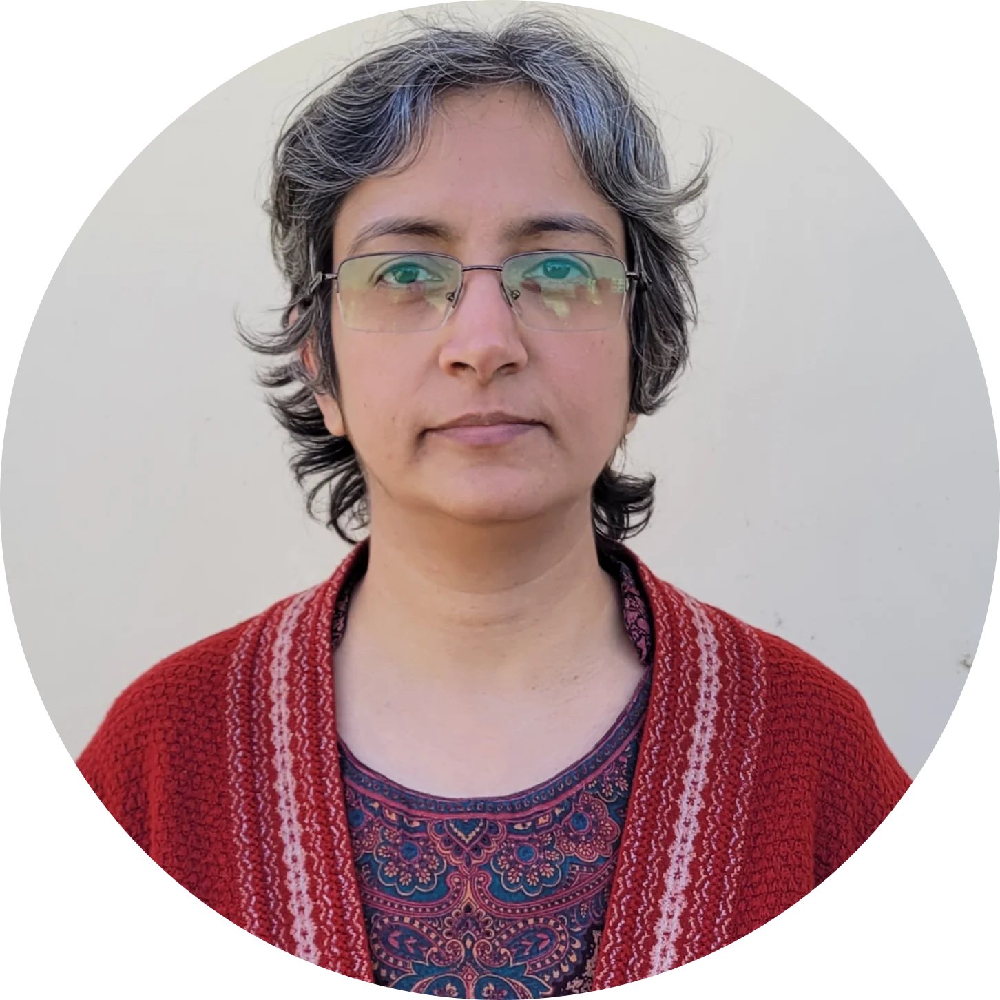

Sonika Thakral
About :
Dr.Sonika is an Associate Professor at the Department of Computer Science, Shaheed Sukhdev College of Business Studies, University of Delhi.
She completed her post-doctoral research at IIT Delhi in 2021. She started her career as a teacher with University of Delhi in 2005 and has been associated with SSCBS since December, 2014.
Her research interests include Theoretical Computer Science, Contemplative Neuroscience and Cognition. She is also interested in Yogic Sciences and its application to mental health.
Education :
- Ph.D. (Theoretical Computer Science), University of Delhi, Title of the thesis: Approximation Algorithms for Data Placement Problems
- NET (UGC), Computer Science and Applications
- M.C.A., Gurukul Kangri University
- B.Sc. (H) Mathematics, University of Delhi
Publications :
- Varsha Singh, Sonika Thakral, Kunal Singh, Sanjeev Jain, Rahul Garg, “Mind and Body in Balance: Assessing Yoga to Demystify its Effects on Cognitive Performance”, in ACCS 2019, Goa, India, December 2019.
- A. Aggarwal, V.T. Chakaravarthy, N. Gupta, Y. Sabharwal, S. Sharma and S. Thakral, “Replica Placement on Bounded Treewidth Graphs”, in Algorithms and Data Structures Symposium, WADS 2017, July 31-August 2, 2017, St. John’s, NL, Canada, 2017, pp. 13-24.
- S. Arora, N. Gupta, S. Khuller, Y. Sabharwal, and S. Singhal, “Facility Location with red-blue demands,” Elsevier Journal ofOperations Research Letters, vol. 42, no. 6-7, pp. 462-465, 2014.
- S. Arora, V.T. Chakaravarthy, K. Gupta, N. Gupta, and Y. Sabharwal, “Replica Placement on directed acyclic graphs”, in 34thInternational Conference on Foundations of Software Technology and Theoretical Computer Science, FSTTCS 2014, December 15-17, 2014, New Delhi, India, 2014, pp. 213-225.
- A. Agarwal, S. Arora, V.T. Chakaravarthy, and Y. Sabharwal, “Power-Aware Resource Activation,” in 21stIEEE International Conference on High Performance Computing, Goa, India, 2014.
Contacts :
Address: Room No. 339A, Beaufort Sea
,Phone Number : +91873933XXXX